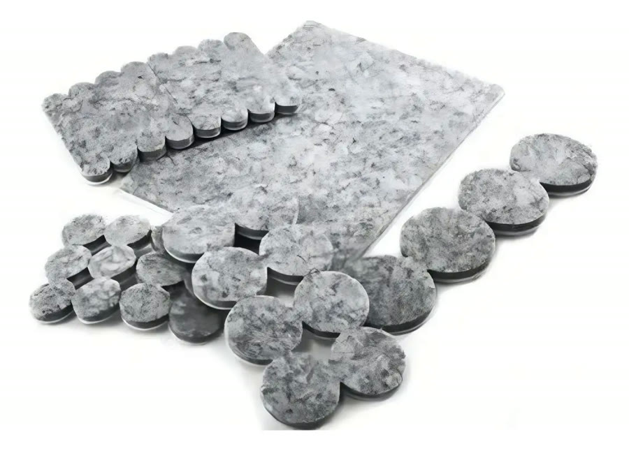
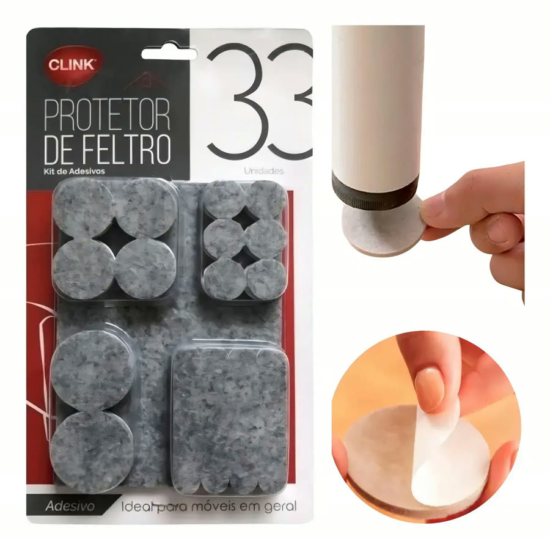
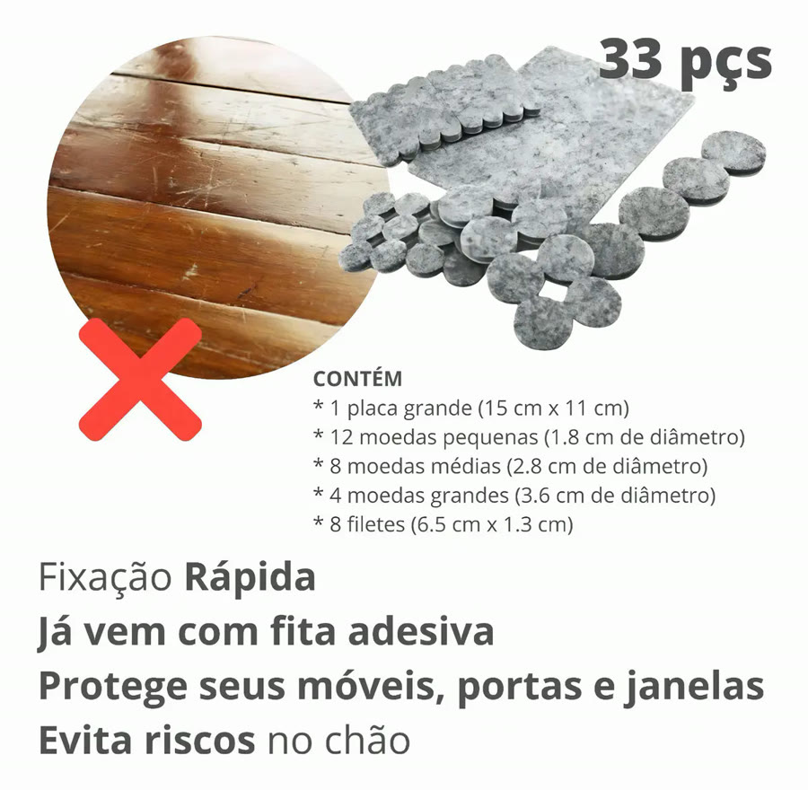
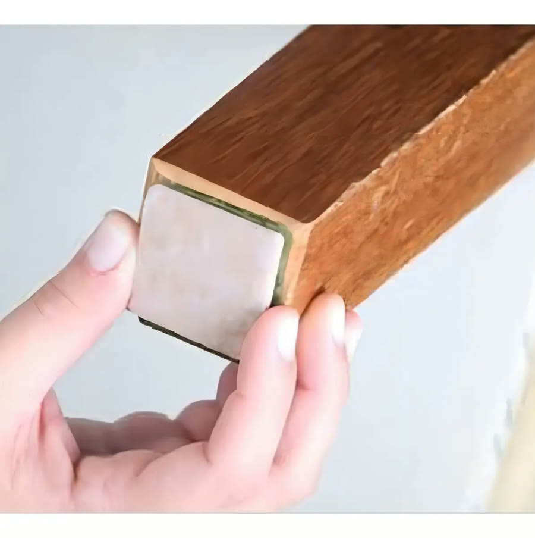
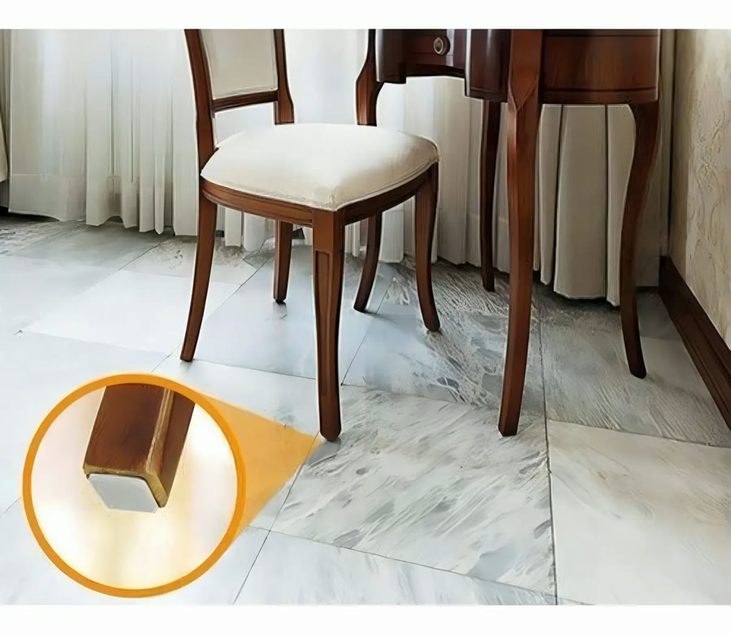

Achado nº 102
Arrastar cadeira e riscar o piso?
Kit de feltros adesivos para pés de móveis
★ 4,8 · mais de 1.400 avaliações no Mercado Livre





O que diz a página oficial do produto
- É um kit de protetores de feltro cinza com adesivo, para colar embaixo dos pés de cadeiras, mesas e sofás
- O kit tem 33 peças de tamanhos variados: 1 placa grande de 15 x 11 cm, 12 círculos pequenos, 8 médios, 4 grandes e 8 tiras
- A placa grande pode ser recortada no formato do pé do móvel, segundo o anúncio
- Segundo o anúncio, já vem com fita adesiva: é só tirar o papel e colar
- Segundo o anúncio, ajuda a evitar riscos no piso
- Segundo o anúncio, serve para móveis, portas e janelas
- O feltro tem 4 mm de espessura
- No Mercado Livre, tem nota 4,8 com mais de 1.400 avaliações e mais de 10 mil vendidos
Link de afiliado: se você comprar por ele, a Achadaria pode receber uma comissão, sem custo extra para você. Preço, estoque e entrega são da loja e podem mudar; confira lá antes de comprar.